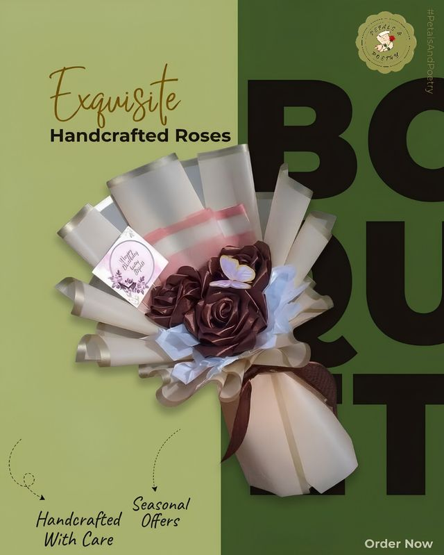

Customized, with a card
Satin flower bouquets
Our customized satin flower bouquets with heartfelt cards turn simple gifts into meaningful memories. With beautiful handmade flowers and personalized messages, each bouquet is a special way to express love, appreciation, and feelings that words alone cannot convey.
Why people choose it
- Long-lasting beauty. Unlike fresh flowers, satin flowers do not wilt easily and can be kept for years.
- Memorable keepsake. A lasting reminder of special moments and meaningful relationships.
- Cost-effective. It can be displayed and cherished long after the occasion.
- Customizable designs. Colors, styles, and arrangements can be personalized to match the recipient’s preferences.
- Meaningful gift. A beautiful way to express love, appreciation, and affection.
- Reusable decoration. Use it to decorate bedrooms, desks, or special event spaces.